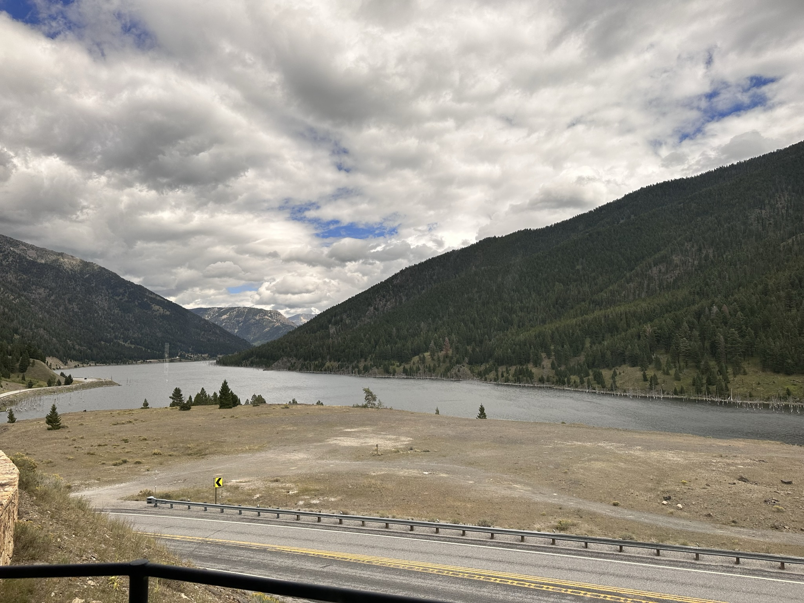
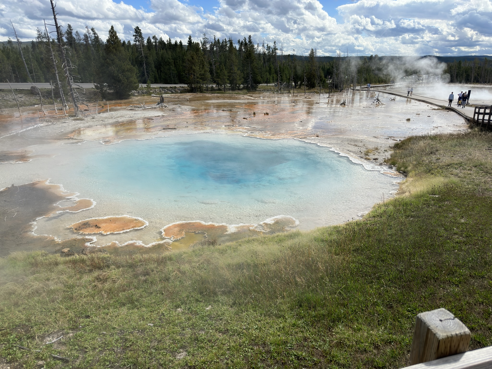
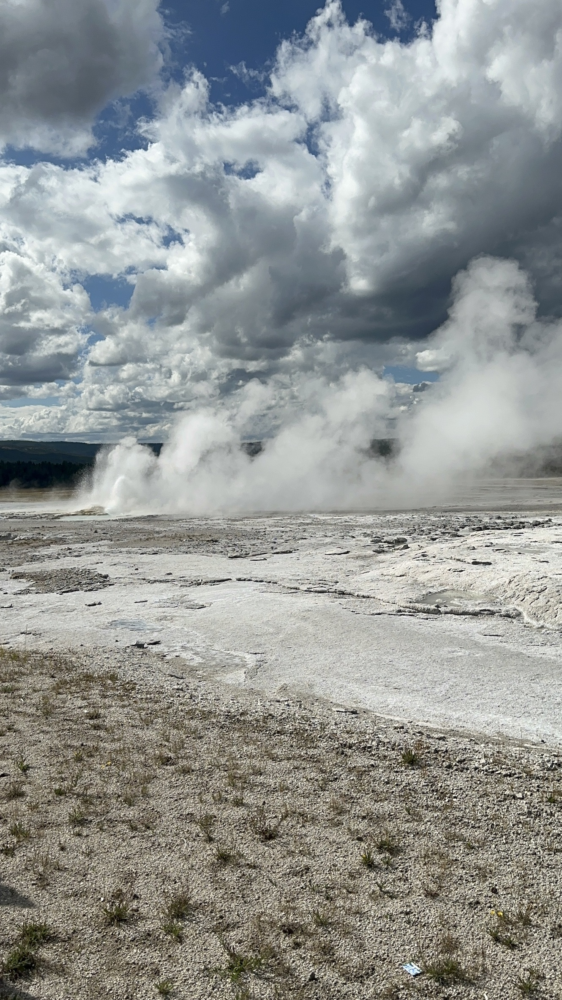
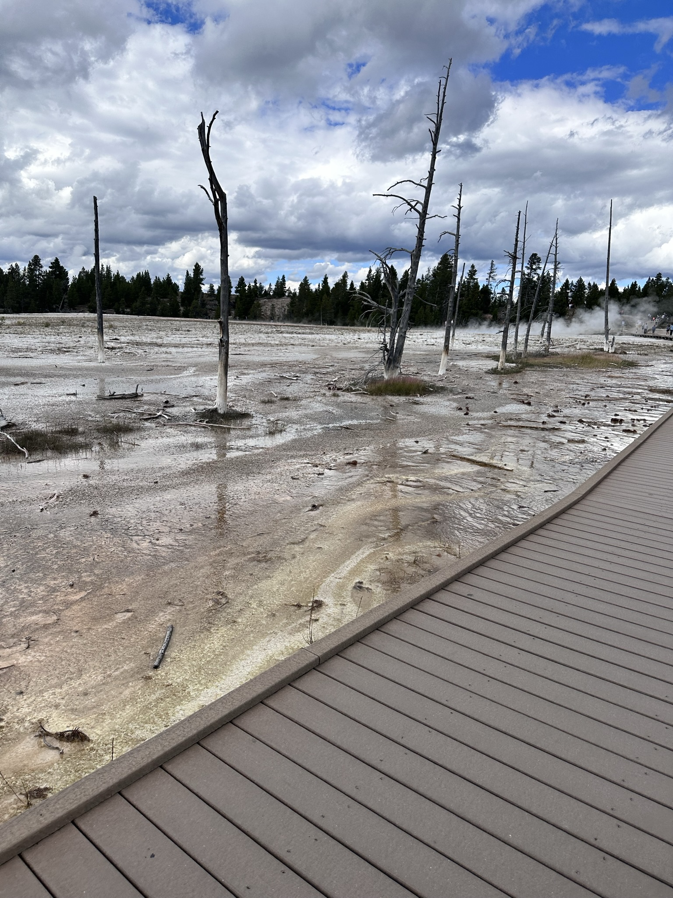
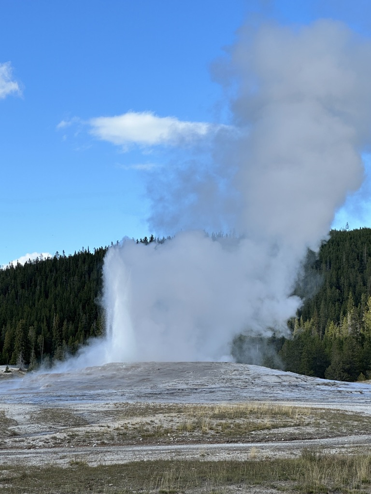
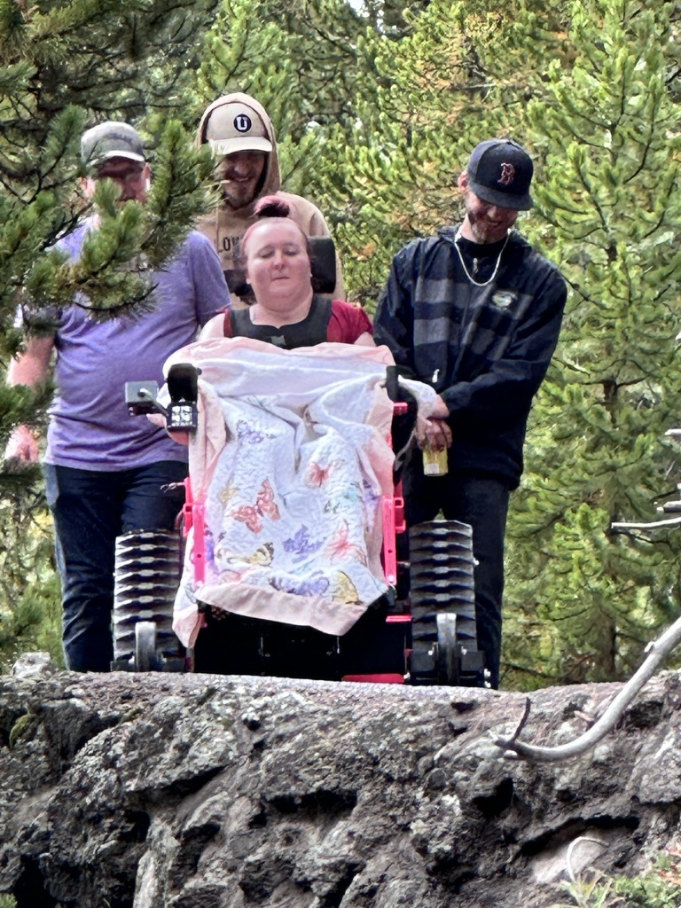
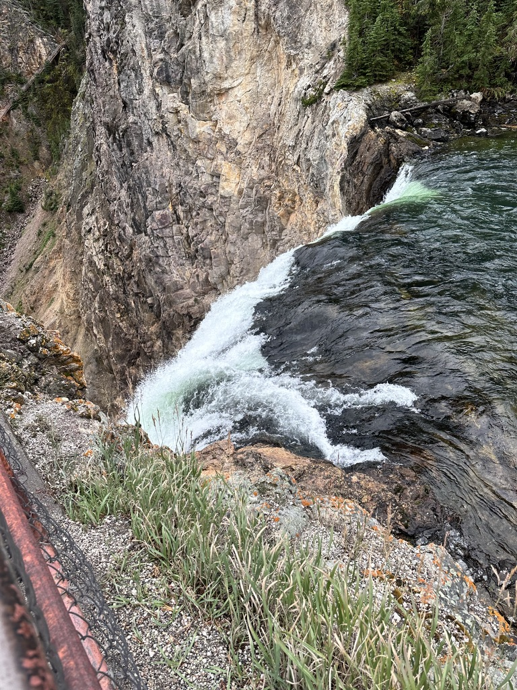
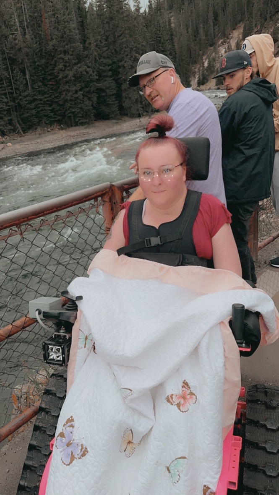

In 2025 the idea for my family was to visit Yellowstone National Park. We ended up going in mid June.
The trip started from Butte to Quake Lake which was absolutely breathtaking. There was so much history behind the lake, the lake was formed in an instant when a 7.5 magnitude earthquake hit the area. The earthquake caused a landslide that dammed the Madison River, creating Quake Lake. The lake is now very popular was a quick stop on the way to Yellowstone National Park. We first stopped at the visitor center to get some information and then we went to the lake. The lake was very beautiful and the history behind it was very interesting. After Quake Lake we drove to West Yellowstone to check into our hotel. Below is a picture from Quake Lake

Then we checked into our hotel in West Yellowstone, and got ready for the next day's adventures. On the follwing day the plan was to drive to ol'faithful stopping at the many attractions along the way. I don't exactly remember the name of the first place we stopped at but it has beautiful springs, gysers, and a lake. We walked that board walk taking in the views and eggy smells. below are some pictures from the first stop.



After that first stop we started on our way to ol'faithful. An iconic gyser in Yellowstone what has a whole village surrounding it. We gpt there at probably the busiest time of day. It was packed and we could'nt find any parking. Once we found parking we walked over to the village and has lunch then went to the gyser the pictures do not do it justice, it was a very cool experience to see the gyser erupt. Below are some pictures from ol'faithful.

on our third and final day we went to the Grand Canyon of the Yellowstone. There was beautiful waterfalls and vibrant colors from the rocks. we hiked down to the bottom of a trail to see the huge waterfall. Nicole is in a wheelchair so it was a little difficult to get down there but we made it. Nicole used her track chair which basically looks like a wheelchair on tank wheels below is a picture of Nicole, the waterfall, and the canyon.



if you would like to check out Nicole's TikTok account, you can find a link here:
Click here to see Nicole's TikTokOverall the trip was very fun but I the park is overly hyped. I would say it is a very beautiful park but I would not say it is the best national park I have been to. I would say Glacier National Park is my favorite national park I have been to. The trip was fun and I am glad I got to go but I would not say it was the best trip of my life. Glacier was better in almost every aspect. To see my Glacier experiance follow the link below.
Click here to see my Glacier Trip Return to the dashboard